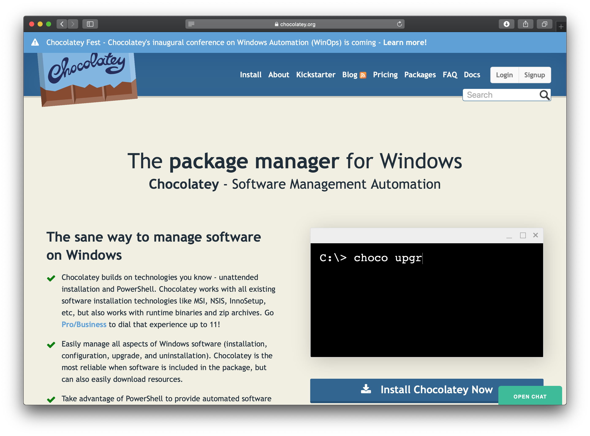
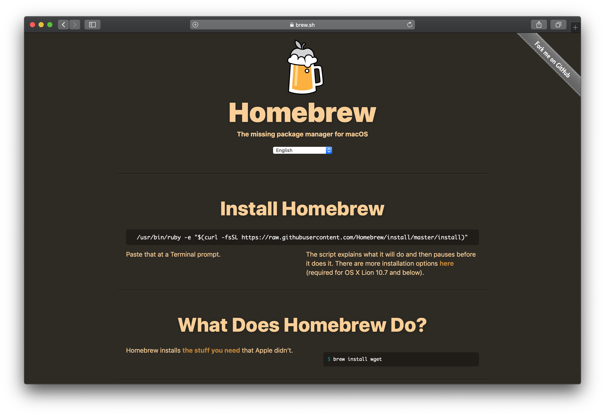
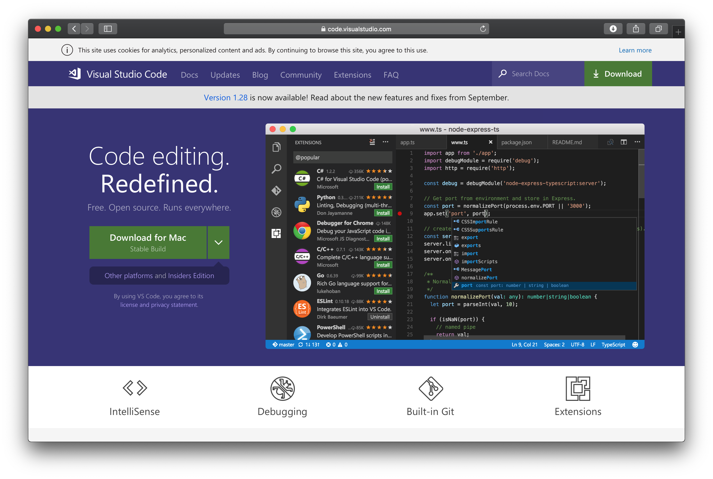
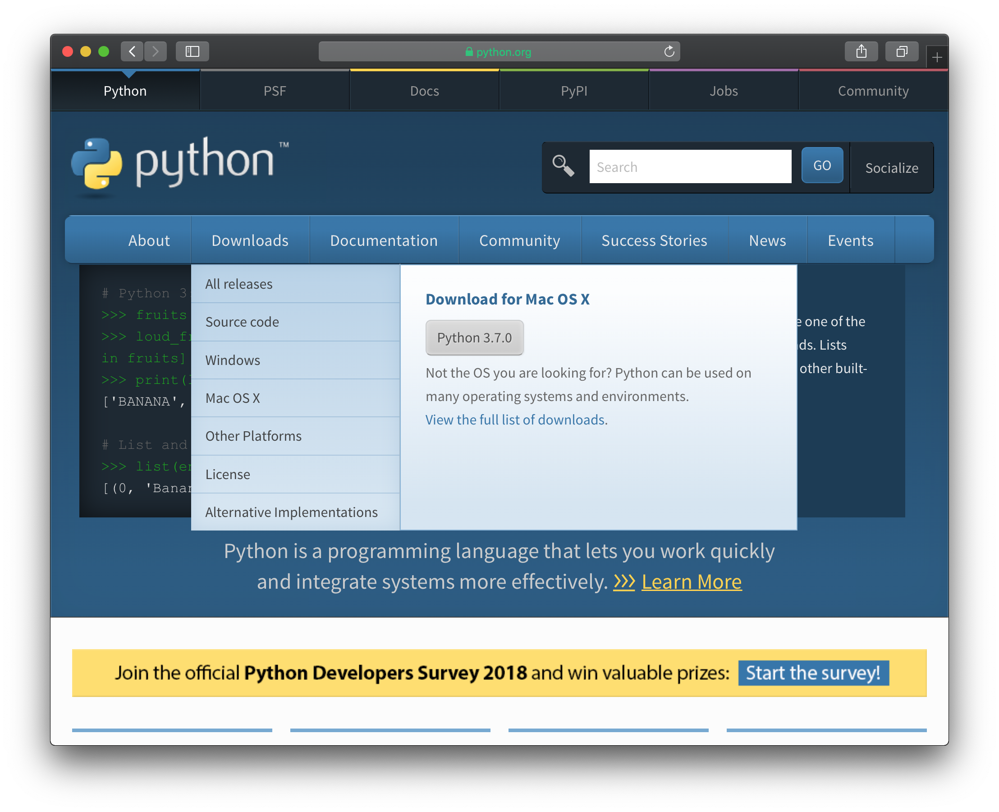
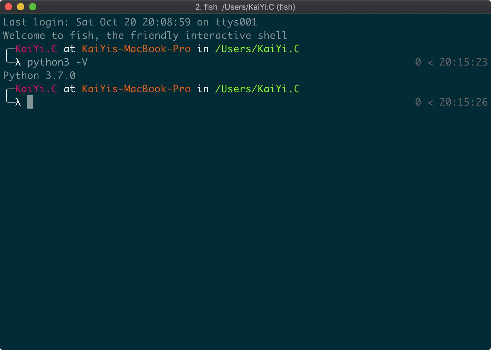
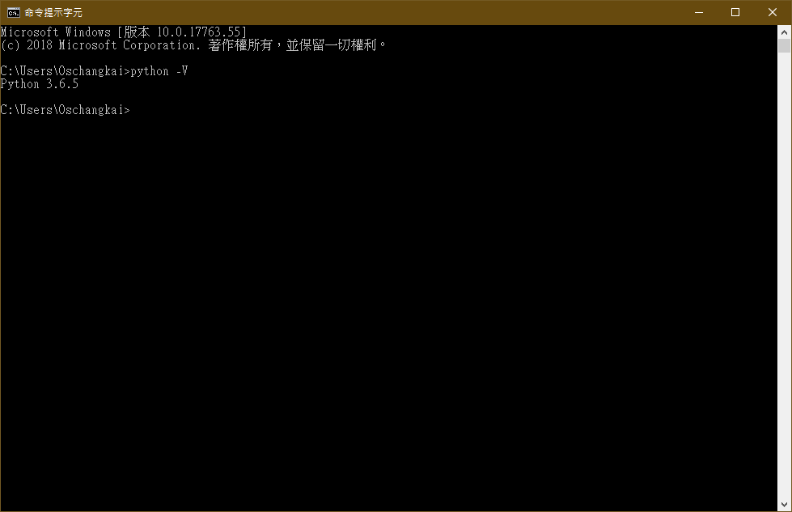

https://slides.kaiyeee.tw/today
眾多的現成套件可以使用！
Chocolatey (Windows) https://chocolatey.org
套件管理器
> @"%SystemRoot%\System32\WindowsPowerShell\v1.0\powershell.exe" -NoProfile -InputFormat None -ExecutionPolicy Bypass -Command "iex ((New-Object System.Net.WebClient).DownloadString('https://chocolatey.org/install.ps1'))" && SET "PATH=%PATH%;%ALLUSERSPROFILE%\chocolatey\bin"
PS> Set-ExecutionPolicy Bypass -Scope Process -Force; iex ((New-Object System.Net.WebClient).DownloadString('https://chocolatey.org/install.ps1'))

Brew (Mac) https://brew.sh
套件管理器
$ /usr/bin/ruby -e "$(curl -fsSL https://raw.githubusercontent.com/Homebrew/install/master/install)"

VSCode https://code.visualstudio.com
編輯器
$ brew cask install visual-studio-code
> choco install vscode

Python https://python.org
$ brew install python3
> choco install python3

Verify
$ python3 -V
> python -V


幫資料取一個名字，把資料儲存起來！
>>> greeting = "Hello World!"
>>> print(greeting)
# Hello World
int 整數float 含小數點的數字str 字串bool 布林Python 可以不用指定型態
>>> year = 2018
>>> type(year)
# class 'int'
>>> price_of_iPhone_Xs = 999.00
>>> type(price_of_iPhone_Xs)
# class 'float'
>>> year = "2018"
>>> type(year)
# class 'str'
延伸閱讀：動態型別的實作方式
試試看數字和字串相加吧
>>> a = 1
>>> b = "2"
>>> print(a + b)
# Traceback (most recent call last):
# File "stdin", line 1, in "module"
# TypeError: unsupported operand type(s) for +: 'int' and 'str'
>>> print(a + int(b))
# 3
>>> print(str(a) + b)
# 12
>>> a = 27 # 0b11011
>>> b = 21 # 0b10101
>>> print(a & b)
# 17 (0b10001)
>>> print(a | b)
# 31 (0b11111)
>>> print(b << 1)
# 42 (0b101010)
>>> print(b >> 1)
# 10 (0b1010)
>>> c = (9 < 7)
>>> d = (9 > 7)
>>> e = (7 <= 7)
>>> print(c)
# False
>>> print(d)
# Ture
>>> print(e)
# True
>>> print(int(c))
# 0
>>> print(int(d))
# 1
>>> L = [0,3,2,0,1]
>>> print(L)
# [0, 3, 2, 0, 1]
>>> L.append(9)
>>> print(L)
# [0, 3, 2, 0, 1, 9]
>>> print(L[5])
# 9
>>> print(L[-2])
# 1
# if.py
x = 15
if x == 0:
print(x, "is zero")
elif x > 0:
print(x, "is positive")
elif x < 0:
print(x, "is negative")
else:
print(x, "is unlike anything I've ever seen...")
$ python if.py
## 15 is positive
# for.py
for i in range(1,10):
print(i, end = ' ')
fruits = ["Apple", "Banana", "Peach"]
for fruit in fruits:
print(fruit, end = ' ')
$ python for.py
## 1 2 3 4 5 6 7 8 9 Apple Banana Peach
# def.py
def fibonacci(N, a=0, b=1):
L = []
while len(L) < N:
a, b = b, a + b
L.append(a)
return L
fib10 = fibonacci(10)
print(fib10)
fib10from2 = fibonacci(10, 0, 2)
print(fib10from2)
print(fibonacci(10, b=3, a=1))
$ python def.py
## [1, 1, 2, 3, 5, 8, 13, 21, 34, 55]
## [2, 2, 4, 6, 10, 16, 26, 42, 68, 110]
## [3, 4, 7, 11, 18, 29, 47, 76, 123, 199]
等同於其他程式語言的 main 函式
# main.py
def show_fruits():
fruits = ["Apple", "Banana", "Peach"]
for fruit in fruits:
print(fruit, end = ' ')
def show_one2ten():
for i in range(1,11):
print(i, end = ' ')
if __name__ == "__main__":
show_one2ten()
$ python main.py
## 1 2 3 4 5 6 7 8 9 10
# class.py
class Dog():
def __init__(self, name, age):
self.sound = 'Bark!'
self.name = name
self.age = age
def make_sound(self):
print(self.sound)
def show_age(self):
print(self.age)
if __name__ == "__main__":
goby = Dog('Goby', 4)
goby.make_sound()
goby.show_age()
$ python class.py
## Bark!
## 4
安裝外部套件 - 使用虛擬環境
程式碼：https://github.com/Oschangkai/NNGuessNumber
## 進入專案資料夾
$ cd Project
## 安裝虛擬環境
$ pip install pipenv
## 安裝套件進入虛擬環境
$ pipenv install
Pipfile
[packages]
numpy = "*"
matplotlib = "*"
[requires]
python_version = "3.7"
import numpy as np
# Mac
import matplotlib
matplotlib.use('TkAgg')
import matplotlib.pyplot as plt
x = np.linspace(0, 2, 100)
plt.plot(x, x, label='linear')
plt.plot(x, x**2, label='quadratic')
plt.plot(x, x**3, label='cubic')
plt.xlabel('x label')
plt.ylabel('y label')
plt.title("Simple Plot")
plt.legend()
plt.savefig('fig.png')
裡面藏了很多東西，歡迎去挖寶：
https://github.com/Oschangkai
我的聯絡方式...
Email: oschangakai@gmail.com
Telegram: @kaiyeee
推薦讀物
拜託大家幫我填個表單~~
https://slides.kaiyeee.tw/feedback
{kind=link}
{kind=link}